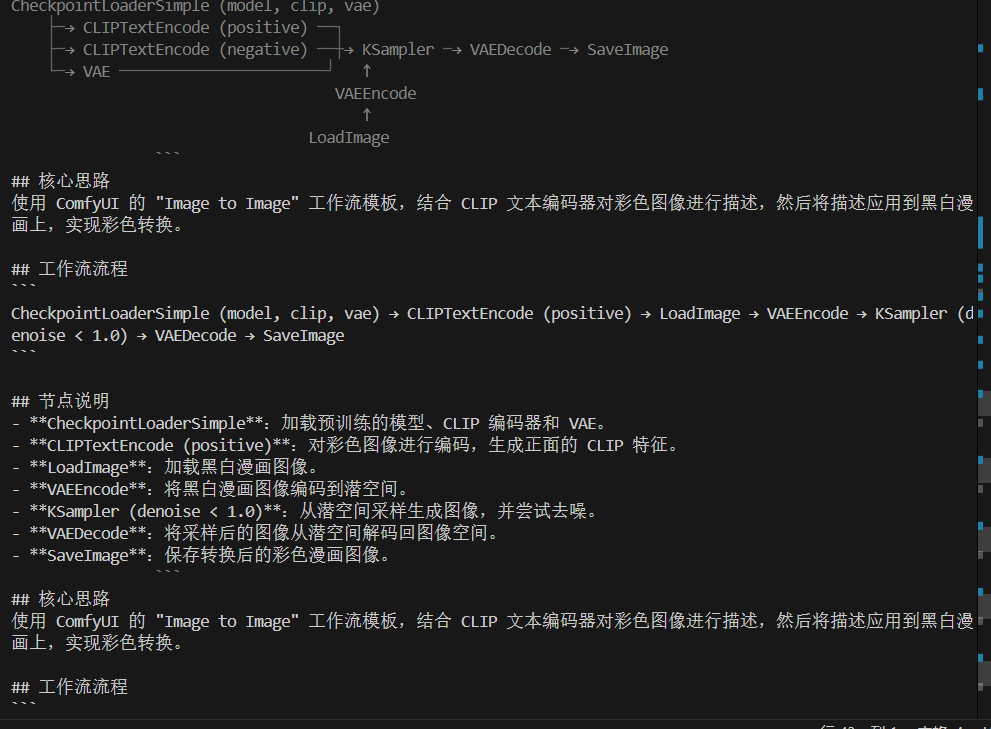

引言：为什么需要“会搭工作流”的 AI？
ComfyUI 作为当前最流行的 Stable Diffusion 可视化工作流工具，以其灵活性和高性能赢得了大量创作者的青睐。但对新手甚至中级用户来说，搭建高效、稳定的工作流仍是一道高门槛，说白了，目的是为了减低我的使用门槛，仅此，特别是对于以下情况：
- 不知道该用哪些节点组合？
- 面对几十种采样器、ControlNet 配置无从下手？
- 看到 CivitAI 上别人分享的模型，却不知道如何配套使用？
于是，我开发了一个 ComfyUI 智能体（Agent） ——它能理解用户的自然语言需求（如“画一张赛博朋克风格的城市夜景，带雨天反光”），自动生成合理的工作流建议，并智能匹配 CivitAI 上的热门模型与工作流模板，生成对应的json
项目概览与技术栈
| 模块 | 技术选型 |
|---|---|
| 核心逻辑 | Python + Agently |
| 大模型后端 | 各厂商随意接入 |
| 向量检索 | ChromaDB |
| 前端界面 | 暂时未做，可以直接套开源项目 |
| 数据源 | 爬取并结构化 CivitAI 上公开的工作流 JSON 与元数据 |
其实整体过程就是利用Agently库进行智能体的构建，目前因为Agently的开发库暂未更新，所以部分功能未完全完善。
目前暂且实现：
思路及节点的提出
关键词推送及检索
工作流推荐推送
主要应用爬虫及agently的库进行实现。
暂时可见输出：
